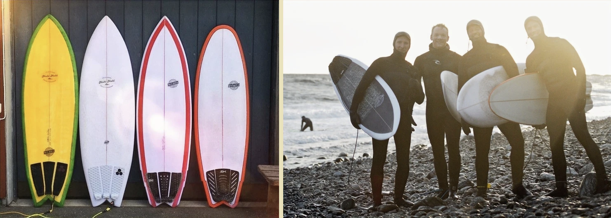

Intervjuer med kreativa människor som delar med sig av egna tankar och erfarenheter

Calle Nyberg
Calle Nyberg hittas med största sannolikhet på vattnet eller bakom kameran. Med en bakgrund som jolleseglare började han vindsurfa redan som 16-åring. Det var farten och närheten till vattnet som lockade. Förutom att vara seglare är han en duktig vågsurfare och har spenderat 19 säsonger på Maui, en plats som ligger honom varmt om hjärtat. Ett tidigt intresse för foto la grunden för Calles karriär som filmare. Han har producerat allt från 50 minuter långa surffilmer till reklamfilmer och musikvideos. Idag har han dessutom ett eget brädmärke och designar bland annat brädor åt svenska mästaren i vågsurfing. Det är inspirerande att se en person som lyckas balansera jobb, intressen och familj på det sätt Calle gör. Han är otroligt mån om familj och vänner vilket märks tydligt under intervjun. Upptäcker han något roligt vill han gärna dela med sig och lära andra. När vi hörs på videolänk har han precis varit ute och slipat på en ny surfbräda. I bakgrunden står en beige bräda som får agera modell när han berättar om kurvor och kanaler som är några av nycklarna bakom de framgångsrika MahiMahi brädorna.
Instagram: @callenuiloa | MahiMahi på instagram: @mahimahisurfboard | Hemsida: carlnyberg.com
Vilken typ av surfing håller du på med?
Det är framförallt våg- och vindsurfing jag ägnar mig åt. Jag har testat ytterligare typer av surfing men varken kite eller foil har intresserat mig lika mycket. Kanske är det bekvämligheten att fortsätta med något man redan kan. Att börja med något nytt tar tid och kostar pengar. Jag känner mig nöjd med allt jag redan gör. Ett undantag är skateboard som blev ett nytt intresse för två år sedan. Från början var vi några surfare som skejtade med våra barn. Det är ett utmärkt komplement till surfingen. Vi vuxna tyckte det var kul och fortsatte medans barnen så småningom tröttnade.
Hur länge har du surfat och vad var det som fick dig att börja?
Det är 35 år sedan jag började vindsurfa. Det var farten och närheten till vattnet som väckte mitt intresse. Med en bakgrund som jolleseglare var tröskeln in i sporten något lägre. Intresset för vågsurfing kom till senare när jag var utomlands. Det var 1992 som jag åkte till Maui för första gången. Hawaii har fått mig att uppskatta hela kulturen kring surfing. Livsstilen är en del av vad jag gillar med sporten. På den tiden fanns ytterst få vågsurfare i Norden. Idag är det betydligt fler som våg- och vindsurfar längs Sveriges kuster.
Hur kommer det sig att du började bygga surfbrädor och startade företaget MahiMahi Surfboards?
Att bygga brädor är inte helt nytt för mig. Under några år arbetade jag på Brädseglarskolan som då var Europas största surfbutik med en butikslokal på 800 kvm. Där fanns möjlighet att hyra brädbyggarlokaler vilket jag gjorde för att bygga egna vindsurfingbrädor. På 90-talet fixade jag en kurs i brädbygge på Tyresö fritidsgård. Tillsammans med ett gäng ungdomar byggdes ett tiotal brädor. Målet med MahiMahi är att bygga vågbrädor som är anpassade efter svenska förhållanden. Vågorna i Sverige har inte samma kraft som i andra delar av världen vilket gör dem svårare att accelerera på. Därför bygger jag brädor med former som skapar både hastighet och möjlighet att svänga bra. Den första brädan jag designade var för eget bruk och byggdes på ren nyfikenhet. Arvid Lilljeforss som är en duktig surfare provkörde brädan och gav tummen upp efter första vågen. Efter några åk på Torö ville han gärna ha en egen. Hösten 2020 vann han SM i vågsurf för herrar med en bräda som jag byggt - det kändes väldigt kul. . Han vann bara ett halvår efter det att jag startat MahiMahi. Raspen i Guld (se bild) fick jag av Arvid som inofficiellt pris.
Hur många brädor bygger du per år och vilka säljer du till?
Det är ungefär ett år sedan jag började designa brädor. Hittills har jag producerat 12 stycken och har ytterligare en på gång. Efter Arvid stod en kompis till honom på tur och på det viset har det fortsatt. På senare tid har jag fått tacka nej till några beställningar. En bräda som säljs för runt 8000 kronor tar cirka två till tre veckor att bygga. Timlönen blir inte särskilt hög med tanke på att materialet kostar en del. När någon frågar efter en bräda vill jag därför alltid veta varför de vill ha den. Det ska vara en bräda som behövs och saknas på marknaden.

Vilka har varit de största utmaningarna med MahiMahi Surfboards?
Som sagt har jag fått tacka nej till en del förfrågningar på grund av tidsbrist. En utmaning med brädorna är blocken som både är dyra att beställa och tar tid att forma. För att lösa problemet har jag inhandlat byggskum som annars brukar användas i husgrunder. Dessutom har jag fått kontakt med en person som skär ur blocken med en speciell såg vilket effektiviserar och underlättar mitt arbete enormt. Jag gillar idén om att surfbrädan redan finns i blocket. Min uppgift är att hitta den och ta fram dess potential. Som formgivare finns möjlighet att vara kreativ och experimentera vilket passar mig. Efter att ha besökt några av de främsta formgivarna på Hawaii har jag dock förstått vikten av att inte genomföra alltför galna idéer.
Instagram: @callenuiloa | MahiMahi på instagram: @mahimahisurfboard | Hemsida: carlnyberg.com
Hur började du arbeta med foto?
Mitt tidiga intresse för foto har varit centralt i valet av karriär. Att jobba som filmare passar mig väldigt bra. Det har funnits möjlighet att integrera surfingen i arbetet, vilket var ett mål från början. Efter några år som först butiksbiträde och senare butikschef på Brädseglarskolan ville jag börja plugga. Jag läste illustration och grafisk formgivning på Berghs i Stockholm och fick jobb som fotoassistent inom mode och reklam. När jag sa upp mig som fotoassistent var det för att hitta något som innebar mer tid bakom kameran. Jag anmälde mig till en utbildning inom film och tv på Medieskolan. Idag producerar jag reklam-, instruktions- och surffilmer åt företag inom olika branscher och musikvideos åt ett flertal artister. Jag uppskattar hela processen från idéskapande till filmande och klippning.
Går det att kombinera intresset för surf med filmandet?
För mig har det fungerat bra. I början var surffilmerna ett sätt att visa upp en annan livsstil. År 2000 gjorde jag filmen “Sand mellan tårna”. Under 50 minuter får tittarna följa olika surfare och deras relation till sporten. Ett mål med filmen var att spegla den mångfald av människor som samlas på vattnet. Jag ville att alla tittare skulle känna sig representerade, oavsett kunskapsnivå, bakgrund och yrke. Filmvisningen hölls för 700 personer på Sturecompagniet i Stockholm. Det kändes stort när den visades på stora duken. Efteråt skickade jag filmen till de stora surfarna och företagen på Hawaii. Året efter ringde det tyska företaget Fanatic och ville att jag skulle filma marknadsföringsmaterialet för deras nya brädor. Det var början på ett 15 år långt samarbete.
Hur var det att göra filmer åt Fanatic?
I början var budgeten låg och jag jobbade hårt för att försöka överleverera genom kontakter och den kunskap jag utvecklat genom studierna. Jag uppfann konceptet att inte bara fokusera på surfaren utan också inkludera den som designar brädorna i filmerna. Att både höra en proffssurfare och skaparen av brädan ger fler perspektiv och lyfter tanken bakom hantverket. Det lyckades bra. Vi fortsatte vårt samarbete med nya filmer och en utökad budget. Under sammanlagt 15 vintrar spelade jag in filmer åt Fanatic. I början var de i form av VHS, där varje film presenterade sju brädmodeller. Senare kom DVD-skivan som rymde mer material. När internet blev stort tryckte jag på fördelarna med en Youtube-kanal som sedan blev verklighet. Då nådde vi en ännu större publik och de tekniska möjligheterna var ännu fler. Under mina utlandsvistelser har jag även gjort återkommande film- och fotojobb åt NorthSails, SimmerStyle och HotsailsMaui vilket varit otroligt häftigt resulterat i många fina filmer.
Hur är det att jobba med sitt stora intresse?
Det är inte alltid lätt att arbeta med sin hobby. Samtidigt är jag väldigt nöjd och tacksam över att få göra det. Målet har alltid varit att jobba med något jag tycker är kul. Det är svårt att bortse från att en inkomst är nödvändig. Jag värdesätter de upplevelser jobbet ger. Att trivas och ha kul känns viktigare än att tjäna stora pengar. Det gäller att hitta en balans mellan jobb och fritid som för min del innebär möjligheten att resa till Maui några månader under vintern med familj och vänner. Ibland betraktar jag pengar i termer av Maui-resor. Det gör det lättare att konsumera färre onödiga prylar och prioritera rätt. Jag surfar hellre några månader varje vinter än att köpa en ny bil eller göra karriär på ett kontor.
Under intervjun gav Calle flera bra tips till dig som vill surfa mer under året, trots jobb och andra plikter. Här är tre av tipsen:
1. Minska utgifterna och förläng surfresan. När vi åker till Maui bor vi med sommarhusstandard och hyr en enklare bil för att få pengarna att räcka längre.
2. Spara pengar under sommarhalvåret och försök undvika onödig utgifter. Varje krona är en bit av en resebiljett till vågorna och värmen.
3. Värdesätt upplevelser framför hög materiell standard.
Vad är du mest stolt över?
Jag är stolt över att kunna kombinera mina intressen med jobb och tid med familjen. Vi har många fina minnen från de resor vi gjort tillsammans. Det är inte helt ovanligt att sluta med sina intressen i och med att man får barn. För oss har surfingen blivit ett sätt att umgås. De (min fru och son) är inte alltid sugna på att åka till Torö en regnig dag i oktober men Biarritz eller Maui uppskattar de lika mycket som jag. Jag trivs väldigt bra i min vardag och är tacksam för alla fina människor jag har runt mig.
Instagram: @callenuiloa | MahiMahi på instagram: @mahimahisurfboard | Hemsida: carlnyberg.com